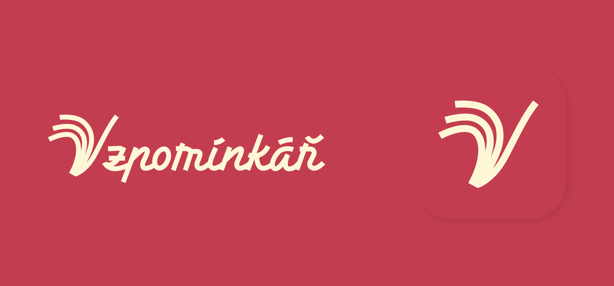

Barevná paleta · fyzická kniha

Staromódní
Staromódní
barevná kombinace
Malinová růžová a teplá krémová z loga, doplněné o hlubokou námořnickou modř. Tři barvy, jeden vzpomínkový, lehce nostalgický tón.
Čtyři tóny
Paleta
01
02
03
04
Jak spolu fungují
Kombinace v kontextu
Navy × krém × malinová
Vzpomínky, které
Vzpomínky, které
zůstanou na papíře.
Hluboká modř drží text a dodává vážnost. Krém dýchá, malinová přitahuje oko přesně tam, kam má.
Objednat knihu Více
Krém na malinovéVyprávěj. Zapiš.
Předej dál.
Druhá varianta loga — krémové na malinové ploše.
Jak to funguje
Krém × navy
Čistá, čitelná, klidná.
Klasická kombinace pro běžný obsah stránky — tmavý text na teplém papíře.
Tlačítko navy Tlačítko malinové
Vzorky textu
Nadpis v malinové
Podnadpis a tělo textu v námořnické modři. Takhle vypadá odkaz. Drobnější poznámka pod čarou zůstává v inkoustové modři s nižší sytostí.
Na hmatatelném příkladu
Obálka knihy
Příběh
jednoho života
jednoho života
300 otázek
Psáno i vyprávěno
Tak by mohla působit
Malinová obálka, krémové logo,
Malinová obálka, krémové logo,
navy pro detaily.
Barevná kombinace přenesená na samotný produkt. Teplá, nostalgická, a přitom čitelná — přesně ten staromódní pocit, o který jde.
589Kč